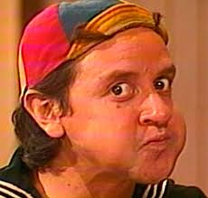
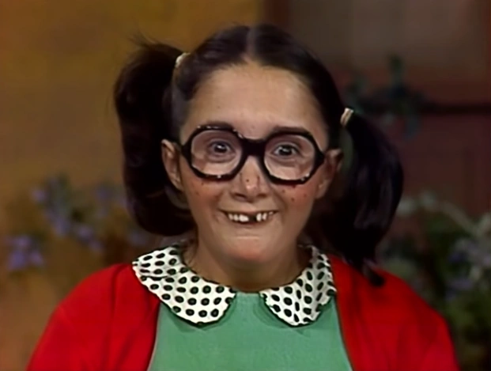
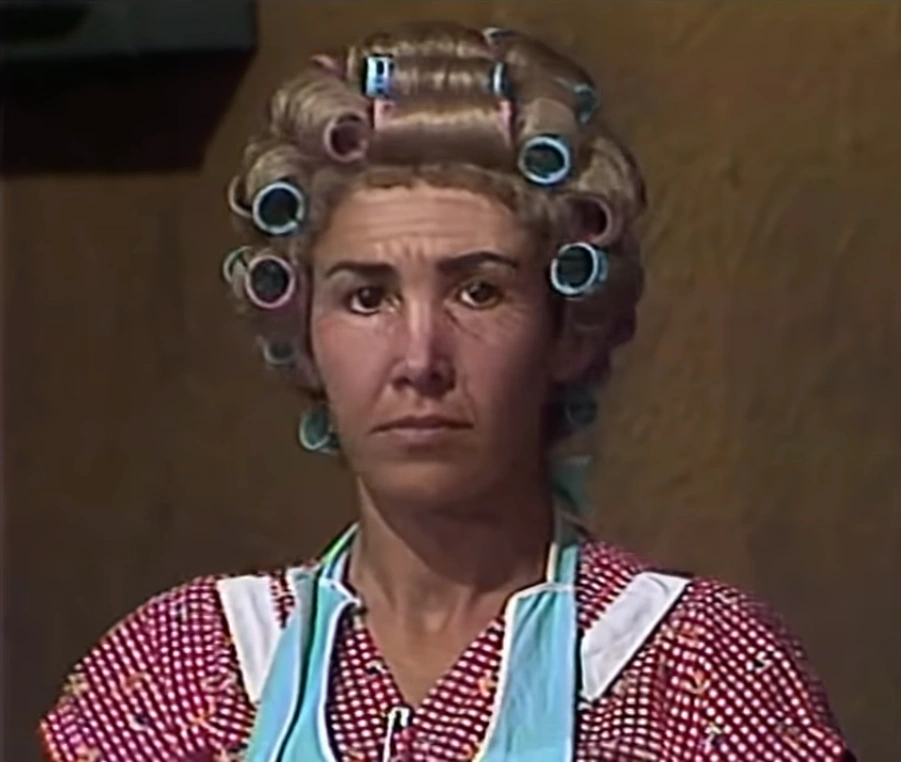
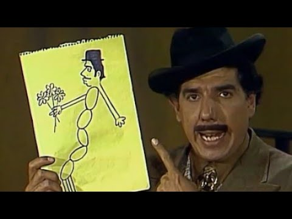
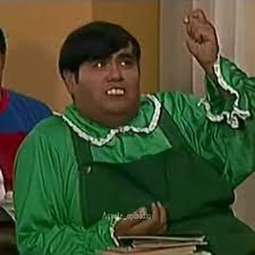
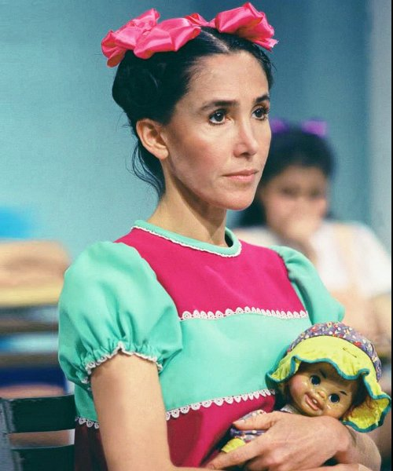
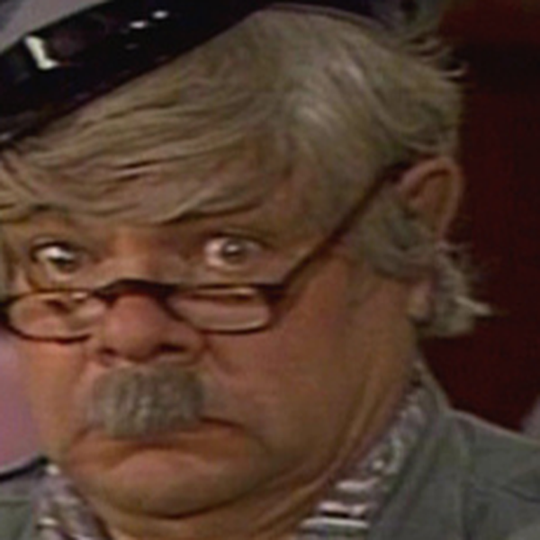
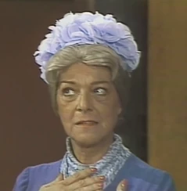

História de Chaves
Chaves é uma série mexicana sobre um órfão pobre que vive em uma vila humilde. A trama foca no humor simples e nas confusões cotidianas entre ele, seus amigos (Quico e Chiquinha) e os vizinhos adultos (Seu Madruga, Dona Florinda e Sr. Barriga). É um ícone cultural que usa a comédia para falar de amizade, fome e resiliência.
Personagens Relevantes

Chaves

Quico

Chiquinha

Seu Madruga

Dona Florinda
Seu Barriga

Professor Girafales

Nhonho

Popis

Jaiminho o carteiro
Godines

Dona Clotilde